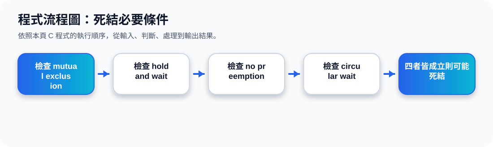

二、四個必要條件總覽
核心觀念 Deadlock 要發生，下面四個條件必須同時存在。只要破壞其中一個條件，就可以避免死結。
1. Mutual Exclusion
互斥。某些資源一次只能被一個 process 使用，例如印表機、某些檔案鎖。
2. Hold and Wait
持有並等待。process 已經持有至少一個資源，同時又等待其他 process 手上的資源。
3. No Preemption
不可搶奪。資源不能被系統強制拿走，只能等持有資源的 process 自己釋放。
4. Circular Wait
循環等待。process 之間形成一個等待圈，例如 P0 等 P1，P1 等 P2，P2 又等 P0。
三、互動流程：Deadlock 如何形成
四個條件一步一步看
等待圈示意
四、用生活例子理解四個條件
例子：兩個人借工具
A 拿著螺絲起子，還想借鉗子；B 拿著鉗子，還想借螺絲起子。兩個人都不願先放下手上的工具，就會互相等待。
對應到作業系統
Process A 持有 Resource 1 並等待 Resource 2；Process B 持有 Resource 2 並等待 Resource 1。這就是資源等待形成的 deadlock。
五、如何避免 Deadlock：破壞其中一個條件
因為四個條件是 deadlock 的必要條件，所以避免 deadlock 的基本想法，就是破壞其中一個條件。
避免死結的四種方向
六、重點整理
Deadlock 必須四個條件同時成立
不是有等待就一定 deadlock，而是要形成互相卡住的狀態。
Cycle 是重要線索
前一主題的 Resource-Allocation Graph 可以幫助判斷 Circular Wait。
破壞任一條件即可預防
OS 可透過資源申請規則、搶奪策略或排序規則降低死結風險。
程式流程圖與流程講解
程式流程圖：死結必要條件

流程講解
可編輯 C 程式範例與線上編輯器
可編輯 C 程式：死結必要條件
這段程式依照上方流程圖設計，包含中文註解，適合貼到線上編輯器直接執行與修改。
程式題目完整教學內容
程式題目完整教學：死結必要條件
一、程式題目講解
檢查 Deadlock 的四個必要條件是否同時成立。
核心觀念是 mutual exclusion、hold and wait、no preemption、circular wait 四者同時成立時，系統可能發生死結。
二、完整程式碼
以下程式碼可直接複製到 C 語言線上編譯器執行。程式中已加入中文註解，說明主要變數、判斷流程與輸出目的。
#include <stdio.h>
/*
主題 19：死結必要條件
功能：檢查 deadlock 的四個必要條件。
*/
int main(void) {
int mutualExclusion = 1;
int holdAndWait = 1;
int noPreemption = 1;
int circularWait = 1;
if (mutualExclusion && holdAndWait && noPreemption && circularWait) {
printf("四個必要條件皆成立：系統可能發生 Deadlock。\n");
} else {
printf("至少一個必要條件不成立：可避免 Deadlock。\n");
}
return 0;
}三、程式執行結果
四個必要條件皆成立：系統可能發生 Deadlock。結果說明：核心觀念是 mutual exclusion、hold and wait、no preemption、circular wait 四者同時成立時，系統可能發生死結。 程式依照設定的資料與控制流程逐步輸出，因此可以從結果看到每個步驟的執行順序與狀態變化。
四、程式流程圖與流程圖說明
本頁上方已提供對應的程式流程圖，圖中以「開始、資料設定、條件判斷、重複處理、輸出結果、結束」呈現程式執行順序。
程式把四個條件設為 1，再用 if 檢查是否全部成立，若成立就顯示可能發生 Deadlock。
五、重要函數與語法說明
int 變數 1/0 代表條件真假；&& 表示所有條件必須同時成立；if/else 呈現判斷結果。
六、整體說明
本題的學習重點是把作業系統概念轉成可觀察的 C 程式流程。學生應先理解題目概念，再對照程式碼、流程圖與執行結果，掌握變數設定、條件判斷、迴圈處理與輸出結果之間的關係。